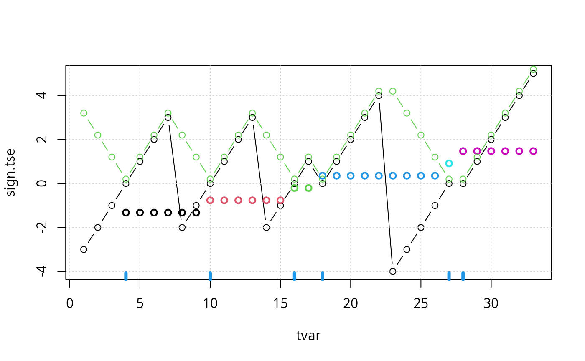

timeSinceEvent.RdCalculate "time since event" in a vector.
timeSinceEvent(yvar, tvar = seq_along(yvar))A numerical or logical vector specifying the events
An optional vector specifying time
A dataframe with columns 'yvar', 'tvar', 'abs.tse' (absolute time since nearest event), 'sign.tse' (signed time since nearest event) and 'run' (indicator of the time window around each event).
Events are coded as 1 in numeric vector (and non-events are
coded with values different from 1). timeSinceEvent will give the
time since event (with and without sign). In a logical vector, events are
coded as TRUE and all non-events as FALSE.
NA's in yvar are converted to zeros.
## Events:
yvar <- c(0, 0, 0, 1, 0, 0, 0, 0, 0, 1, 0, 0, 0, 0, 0, 1, 0, 1, 0, 0, 0,
0, 0, 0, 0, 0, 1, 1, 0, 0, 0, 0, 0)
## Plot results:
tse <- timeSinceEvent(yvar)
plot(sign.tse ~ tvar, data=tse, type="b")
grid()
rug(tse$tvar[tse$yvar==1], col=4, lwd=4)
points(scale(tse$run), col=tse$run, lwd=2)
lines(abs.tse + .2 ~ tvar, data=tse, type="b", col=3)

## Find times for which time since an event is at most 1:
tse$tvar[tse$abs <= 1]
#> [1] 3 4 5 9 10 11 15 16 17 18 19 26 27 28 29
yvar <- c(0, 0, 0, 0, 0, 0, 0, 0, 0, 0, 0, 0, 0, 0, 1, 1, 0, 0, 0, 0,
0, 0, 0, 0, 0, 0, 0, 0, 0, 1, 0, 0, 0, 0, 0, 0, 0, 0, 0, 0, 0
)
tvar <- c(207, 208, 208, 208, 209, 209, 209, 209, 210, 210, 211, 211,
211, 212, 213, 213, 214, 214, 215, 216, 216, 216, 216, 217, 217,
217, 218, 218, 219, 219, 219, 219, 220, 220, 221, 221, 221, 221,
222, 222, 222)
timeSinceEvent(yvar, tvar)
#> yvar tvar abs.tse sign.tse ewin run tae tbe
#> 1 0 207 6 -6 1 NA NA -6
#> 2 0 208 5 -5 1 NA NA -5
#> 3 0 208 5 -5 1 NA NA -5
#> 4 0 208 5 -5 1 NA NA -5
#> 5 0 209 4 -4 1 NA NA -4
#> 6 0 209 4 -4 1 NA NA -4
#> 7 0 209 4 -4 1 NA NA -4
#> 8 0 209 4 -4 1 NA NA -4
#> 9 0 210 3 -3 1 NA NA -3
#> 10 0 210 3 -3 1 NA NA -3
#> 11 0 211 2 -2 1 NA NA -2
#> 12 0 211 2 -2 1 NA NA -2
#> 13 0 211 2 -2 1 NA NA -2
#> 14 0 212 1 -1 1 NA NA -1
#> 15 1 213 0 0 1 1 0 0
#> 16 1 213 0 0 1 2 0 0
#> 17 0 214 1 1 2 2 1 -5
#> 18 0 214 1 1 2 2 1 -5
#> 19 0 215 2 2 2 2 2 -4
#> 20 0 216 3 3 2 2 3 -3
#> 21 0 216 3 3 2 2 3 -3
#> 22 0 216 3 3 2 2 3 -3
#> 23 0 216 3 3 2 2 3 -3
#> 24 0 217 2 -2 3 2 4 -2
#> 25 0 217 2 -2 3 2 4 -2
#> 26 0 217 2 -2 3 2 4 -2
#> 27 0 218 1 -1 3 2 5 -1
#> 28 0 218 1 -1 3 2 5 -1
#> 29 0 219 0 0 3 2 6 0
#> 30 1 219 0 0 3 3 0 0
#> 31 0 219 0 0 3 3 0 NA
#> 32 0 219 0 0 3 3 0 NA
#> 33 0 220 1 1 3 3 1 NA
#> 34 0 220 1 1 3 3 1 NA
#> 35 0 221 2 2 3 3 2 NA
#> 36 0 221 2 2 3 3 2 NA
#> 37 0 221 2 2 3 3 2 NA
#> 38 0 221 2 2 3 3 2 NA
#> 39 0 222 3 3 3 3 3 NA
#> 40 0 222 3 3 3 3 3 NA
#> 41 0 222 3 3 3 3 3 NA